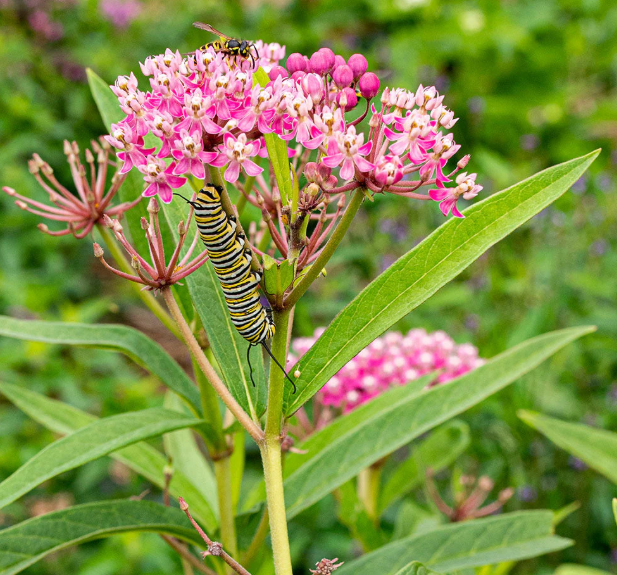

About Monarch Madness

Monarch Butterflies (Danaus plexippus) are a species of migratory butterfly, and a familiar pollinator across North America.
Unfortunately, they are becoming less and less familiar across the continent, as migratory subspecies of Monarchs are considered endangered, and have been given a "vulnerable" designation by the International Union for Conservation of Nature.
Habitat loss due to deforestation of overwintering climates, depletion of milkweed plants that the butterflies need, and disruptions to migration patterns due to climate change threaten the existence of migratory Monarch populations.
I created this website in an attempt to help visualize Monarch butterfly migration patterns in a way that's accessible to the public. Growing up seeing them, as well as raising them in school, I notice them less and less. I wanted to help memorialize their multi-generational migrations across North America, with the hope that as the years go by, the map becomes fuller and fuller.
About Monarch Butterflies
❮

Swamp milkweed (Asclepias incarnata)
❯
Monarch butterflies are easily identified by their bright orange wings with white spotted tips. Males contain scent glands on the bottom of their wings, which can be seen as a (sometimes barely visible) thickening of the black veins that run through the bottom portion of each wing, which are used to attract mates.
It is impossible to talk about Monarch butterflies without also talking about milkweed. Monarch butterflies require milkweed to reproduce. Females will seek out milkweed and lay eggs on the plant. When the eggs hatch into caterpillars, the caterpillars feed on the milkweed plant until they begin their pupal stage (aka the chrysalis).
The coloration of the Monarch butterfly is not just for show. It signals to other animals that they are toxic - making them unappetizing to their natural predators. Monarch butterflies get their toxins from the milkweed plant, which is also toxic. This coloration (known as aposematic coloration) is present not only in adult Monarchs, but in their larval (caterpillar) form, and protects them throughout their life-cycle. The caterpillars will feed on the plant, form their chrysalis on the plant, and continue to seek milkweed out after they hatch into their adult forms.